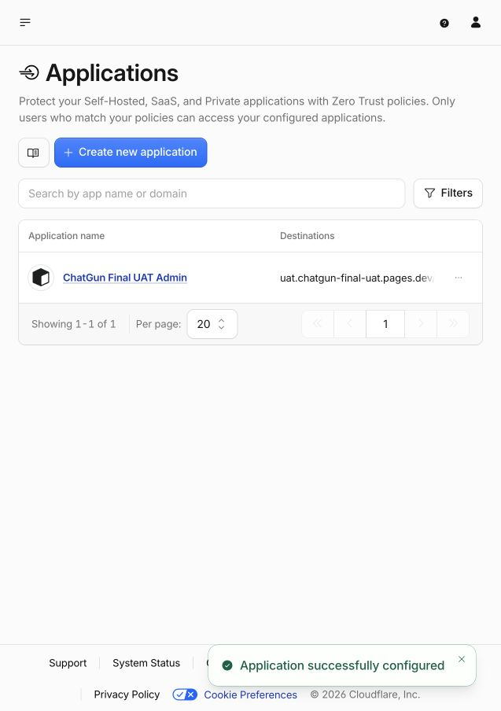
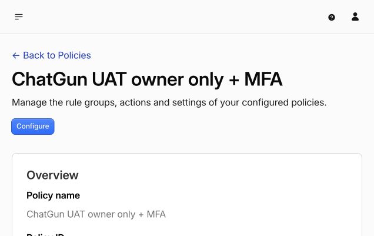

ChatGun — Final UAT Readiness
แพ็กเกจเตรียมทดสอบแบบรวมครั้งเดียว · Dedicated isolated environment · ไม่มีการ deploy Production
OAuth / Access setup update — 24 October 2026
ตั้งค่า Google, Meta test app และ LINE UAT channel แยกครบแล้ว: exact callback และ credentials ใหม่เป็น encrypted Preview secrets ทั้งหมด Deploy application4a เดิมไป UAT และตรวจค่าคงอยู่สำเร็จ LINE ยัง Developing, required2FA ON, email OFF; Meta v26.0, HTTPS/Strict Mode/secret-proof ON ไม่มีการ Publish หรือเพิ่มผู้ทดสอบ
Access เฉพาะ UAT บันทึกแล้ว: owner-email + MFA-only, session10นาที, HttpOnly/binding cookies, issuer/AUD/email encrypted แต่ยังไม่มี owner UUID หรือ role การทดสอบ HTTP ยืนยัน Admin302ไป trusted Access และ auth/config JSON200 Independent MFA ระดับองค์กรยัง OFF รอคำอนุมัติขอบเขตองค์กรหรือ MFA-capable IdP ที่เหมาะสม
Full Node suite248/248, live negative17/17 และภาพ390/768/1440ผ่าน ไม่ใช่ genuine OAuth/MFA ไม่มีบัญชีจริง/คำเชิญ/role ใหม่ และ Production ไม่เปลี่ยน ผลตรวจและ handoff ชุดเดียว · ผลรอบนี้ · Live negative evidence · Google · Meta · LINE encrypted metadata




Performance: measured, not projected
Closed config/health requests:22–77ms in this sample; initial closed page189–251ms. At each width two navigations made38 same-origin requests, including2 API requests. Authenticated synthetic mobile sample initial load1657ms;99 browser responses /45 API responses across navigation and observation;30-second foreground inbox window3 API responses (2 presence,1 conversation), no5xx.
Actual request observations · D1 query plans / caching headers / measurements. This is not account-wide billable usage, monthly-cost or concurrency capacity. No chat thread selected in idle-inbox sample. Actual hidden-tab measurement remains NOT RUN; deterministic visibility regressions retained. No billing upgrade.
One owner-action checklist
Provider-console preparation is complete; no further provider login is requested during engineering setup.
- Explicitly decide whether to enable independent organization-level TOTP MFA (possible inherited effects on other Access apps), or approve an MFA-capable IdP design. UAT owner+MFA policy remains strict. Actual enrollment/fresh-auth proof belongs in the final campaign.
- Privately authorize A and a distinct consenting eligible adult B, provider tester access, test-content and deletion/retention consent. B is not yet provided. Privately verify genuine UAT owner UUID before a separately approved bounded role grant.
- Approve expanded Social/location/private-media UAT policies, acceptance versions, retention, emergency and appeals procedures. Existing owner-pilot approval is narrower.
- Confirm campaign within19:00–22:00 Asia/Bangkok; no backup, independent appeals reviewer, scanner or24/7 guarantee exists.
Only after every gate passes, issue specifically authorized30-minute single-use invitations privately and coordinate one campaign. No genuine campaign has started. Test cases · Containment / backup / rollback
Responsive evidence — synthetic fixtures only
Screenshots contain only explicitly disposable automated accounts, not genuine owner/member evidence. Approved NEAR styling retained; no redesign.
Production preserved
Live SHA a73ff21c615dabb6a0c19c0a22685c2370958ca1, schema17, LINE owner pilot only. Public registration, Discovery, Chat, Presence, uploads, Sensitive, OTP and Demo remain off. Original protected Staging counts and issue13 configuration preserved. Existing Production roles not extended. No Production migrations18–21, user mutations, merge or activation.
Read-only live account / Production / protected fixtures evidence. New UAT Workers and resources only. Private backups are not published here. No public Production GO is inferred from synthetic success.